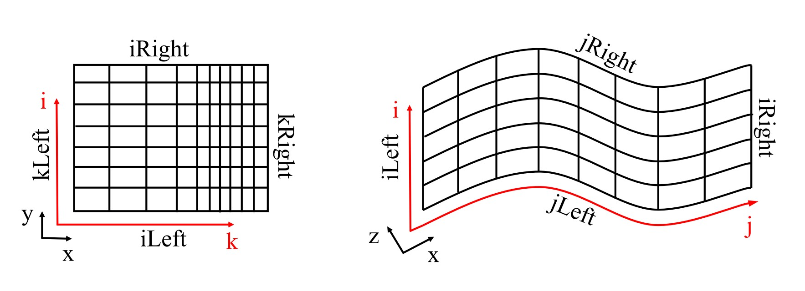

Getting Started
TOSCA is designed to run on massive supercomputers with thousands of cores, thanks to its excellent parallel strong scaling efficiency. Nevertheless, some small test cases, which should run on most personal computers, are provided to allow users to familiarize with the code and its capabilities.
One should keep in mind that TOSCA uses generalized curvilinear coordinates, so that all kinds of structured meshes can be handled (cartesian and deformed). From a mathematical point of view, this allows us to use a cartesian-like discretization approach in the curvilinear space. Loosely speaking, curvilinear directions can be defined depending on how mesh cells are indexed in the loops, i.e. through i,j,k indexing. It is clear from the figure below that, unless the mesh is cartesian, it is impossible to refer to boundary patches in terms of their caresian coordinates. As a consequence, frequently in this document we will speak in terms of curvilinear directions (k,j,i, or \(\xi\), \(\eta\), \(\zeta\)) rather than cartesian coordinates.
When ABL capabilities are activated in TOSCA, a cartesian (optionally stretched) mesh must be used, where z is the vertical direction, y is the spanwise direction and x is the streamwise direction. When this is the case, the following convention is adopted for relating curvilinear to cartesian directions: k (or \(\zeta\)) direction corresponds to x, j (or \(\eta\)) direction corresponds to z and i (or \(\xi\)) direction corresponds to y. This must be kept in mind when applying boundary conditions, as boundaries are referred to as iLeft, iRight, jLeft, jRight, kLeft and kRight, as shown in the figure below.
{kind=link}
This is explained in more detail in Sec. Spatial Mesh. For the sake of brevity, here it sufficies to know that any mesh provided to TOSCA, either cartesian ( through the .xyz format) or curvilinear (through the .grid format), is always internally defined in curvilinear space and so should be the boundary conditions.
TOSCA automatically handles this transformation if a .xyz file format is used, and only the k,j,i = x,z,y convention has to be kept in mind in order to know which boundary is the wall and so on. Conversely, when the mesh is deformed, a unique relationship between the two set of coordinates doesn’t exist anymore, and curvilinear coordinates are assigned depending on how the mesh file has been created. In particular TOSCA always uses nested loops with k,j,i ordering to index mesh cells. As a consequence, to yield the situation displayed on the right of the above figure, the .grid file should store all points with j=1 first, then j=2 and so on. To further clarify this concept, consider the case where a cartesian mesh is provided trough the .grid format. To retain TOSCA’s convention in this case, the file should be created indexing the points with a nested loop with x,z,y ordering. In this case, as the file is read from TOSCA, coordinates are stored in the k,j,i directions.
An example cartesian mesh is provided in Sec. Spatial Mesh, both in the .grid and .xyz formats.
Notably, the user only needs to know which boundary is which, consequently
being able to apply boundary condition the way he intends to. Not respecting the convention doesn’t have an
impact on the code behavior if ABL is de-activated (-abl flag set to 0 or omitted in the control.dat file).
After installing the code as described in Sec. Installation, the user is advised to run one of the provided example cases available in the tests directory. Some of them are described in Sec. Example Cases, and we advise to run them in the order they are described to get familiar with TOSCA’s workflow.
Instructions on how to run TOSCA simulations and visualize binary results in ParaView are provided in both Sec. Execution, as well as in the described and provided example cases.
TOSCA input files are described in detail in Sec. Input Files, where their format is presented, along with a description of all possible entries. TOSCA’s data acquisition system is described in Sec. Data Acquisition System, where the user can find all the information needed to extract different outputs from TOSCA simulations. A description of TOSCA’s overset mesh capabilities is provided in Sec. 2-Way Nesting (Overset Mesh), and some examples are given in the tests directory.
The theory behind TOSCA’s numerical methods is described in Sec. Theory Guide, while a general overview of all applications where TOSCA can be used is provided in Sec. TOSCA Applications (these sections are still under development).
General information on how to get support, report bugs and contribute to the TOSCA code development is provided in the Main Page of this documentation.